Beyond The Outpost Introduction
Available at:
Background & Motivation
The initial idea for Beyond The Outpost came from a science-fiction narrative: in the year 2200, humans have achieved FTL (faster-than-light) travel, and an advanced research vessel embarks on a mission to explore unknown star systems. In fact, the exploration of the unknown and the wonder of the starry sky have long been among my favorite creative themes. It is not a subject rooted in any real-world setting, yet it is not about magic or the supernatural either. Planets, stars, gravity, nebulae, black holes, galaxies — to humanity, these are like a still, eternal backdrop. But what appears static and slow-moving harbors immense energy. The act of exploring them brings infinite possibilities — and a chance to uncover the very nature of existence. This sense of cosmic discovery is at the heart of my motivation for this piece.
Scientific exploration, I believe, is far from dull or monotonous. Quite the opposite: when we take our first steps under the vast sky, when we set foot upon extraterrestrial bodies, these are humanity’s boldest, most determined footsteps. Yet this is not our end point — it is merely the launchpad for the next bold attempt. That courage to explore, and the blend of wonder and unease in facing the unknown, is exactly what I wanted to convey in this work.
“A research ship carrying the best scientists of humanity has set off — no one knows what they will discover on the other side. Let us wish them luck.”
Techniques
• Platform: Ableton Live was used as the primary environment for composition and production.
• Sound Sources: Electronic sounds and bass were mainly generated with Strobe. Percussion was primarily sampled from Kontakt's Damaged Drum Kit, while other orchestral elements were sourced from Ableton's built-in instruments and expansion packs.
• Processing & Effects: Audio was processed using EQ, Reverb, Utility, Compressor, and other effects. Automation was applied to control effect parameters, allowing the sound to evolve over time.
Project Overview
Overview of selected tracks in the MIDI arrangement.
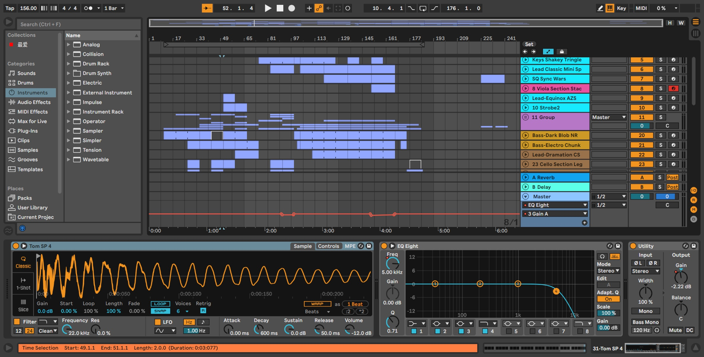
EQ Eight and Utility automation following the musical rhythm.
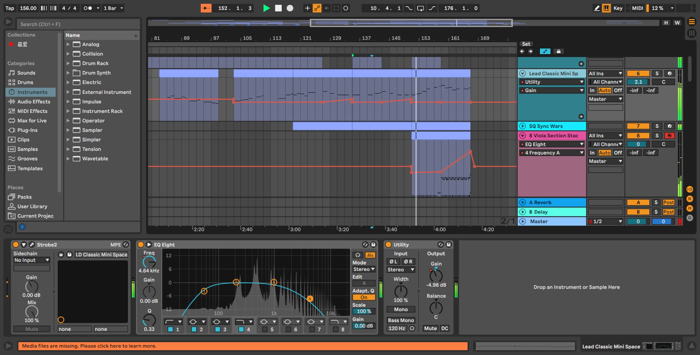
Unconventional EQ frequency automation.
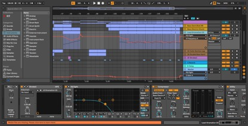
Note content of the bass MIDI clip.
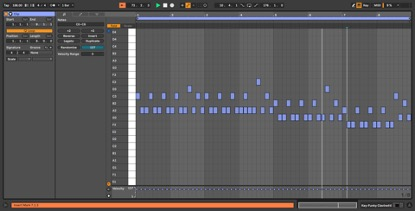
Available at:
SOUNDCLOUD
Journey To Citadel Introduction
Available at:
Background & Motivation
Journey to Citadel is an attempt in a somewhat symphonic style. At its core, this piece is about a journey — not a leisurely trip, but a purposeful, challenging adventure, an abstract voyage. The scenery along the way is not merely visually beautiful; rather, it represents the changing experiences one undergoes during the journey. I composed this piece around the feelings of joy, transformation, and perseverance.
“Citadel” may refer to a concrete place or serve as a symbolic destination imbued with meaning. In my mind, it is like a fortress — not a typical castle, but a spiritual sanctuary, a home world, a place of refuge; something deeply significant to many. For some, Citadel is a home; for others, a bustling city; for still others, it stands as a symbol of their dreams. Everyone has a reason to reach it. I wondered: how can I express the extraordinary significance of such a place in music? I believe that the journey toward it is what truly gives the destination meaning. It is the process of moving toward a goal — the struggle, the growth, the striving — that I want to convey in this composition.
Techniques
• Platform: Ableton Live was used as the primary environment for composition and production.
• Sound Sources: The primary sound sources were Ableton's built-in orchestral instruments and expansion packs.
• Processing & Effects: Audio was processed using EQ, Reverb, Utility, Compressor, and other effects. Automation was applied to control effect parameters, allowing the sound to evolve over time.
Project Overview
Overview of main tracks in the MIDI arrangement
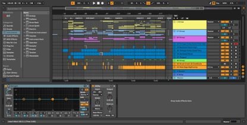
Note content of the piano MIDI clip.
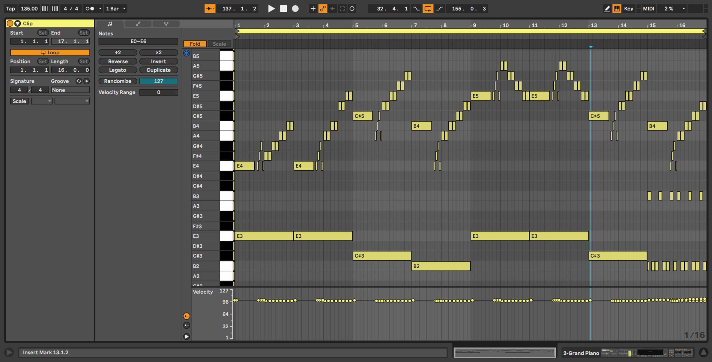
Utility automation following the musical rhythm.
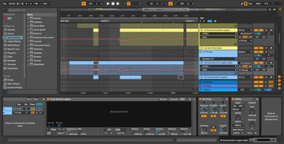
Audio track with some simple raiser and some abrupt sounds.

Available at:
SOUNDCLOUD
Celestropolis Introduction
Available at:
Background & Motivation
Celestropolis actually evolved from a previous project I called FIN. I was dissatisfied with certain aspects of FIN — notably the mixing and the way instruments interacted — and I wanted to try out improved arranging techniques. After analyzing its shortcomings, I began a new musical experiment to validate the theories and ideas I had gleaned, and thus Celestropolis was born. In other words, its original purpose was more technical experimentation than conceptual expression. I explored how to refine mix control, improve instrument coordination, and handle transitions more smoothly.
As the creative process progressed, a larger musical vision gradually emerged in my mind — that of the sky. I began to conceive the project around this aerial theme. But because the piece originated from technical experimentation, its interpretation of “sky” is not simply the serene blue expanse; rather, it embodies a complex, fantastical quality. Over time, a city in the sky materialized in my imagination — like a meticulously woven blueprint of architecture floating among the clouds.
Celestropolis is, to me, the fusion of technology and imagination. This concept — a sky city symbolic of wonder and the unimaginable — became the core around which I shaped the music. Through my composition, I aimed to render and express this idea, painting with sound a vision of an otherworldly metropolis in the heavens.
Techniques
• Platform: Ableton Live was used as the primary environment for composition and production.
• Sound Sources: The primary sound sources were Ableton's built-in orchestral instruments and expansion packs, with additional sounds sourced from Strobe and Heaviocity.
• Processing & Effects: Audio was processed using EQ, Reverb, Utility, Compressor, and other effects. Automation was applied to control effect parameters, allowing the sound to evolve over time.
Project Overview
Overview of main tracks in the MIDI arrangement
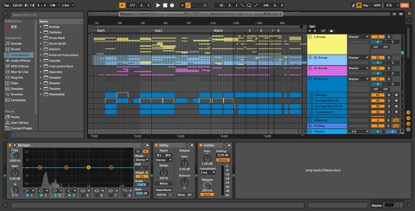
Expanded view of the melodic track group.
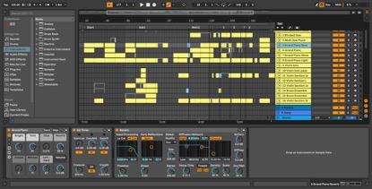
Note content of the piano MIDI clip.
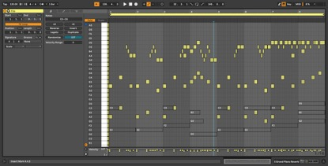
EQ Three and Utility automation following the musical rhythm.
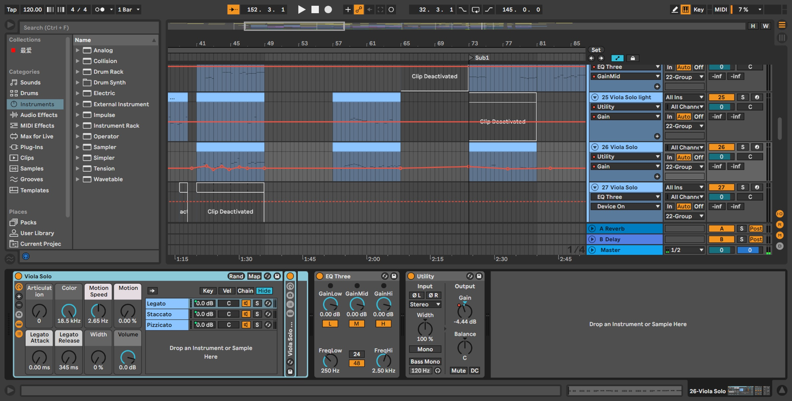
Tracks processed with a sidechain compressor, with Saturator applied as a modifier.
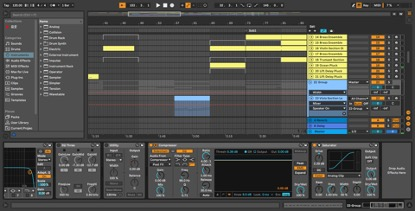
Available at:
SOUNDCLOUD
Audio Visualizer Introduction
Available at:
HERE
Feature Descriptions
• An audio visualization tool that experiments with real-time visual representations of sound. It parses audio data and renders it using HTML Canvas to display a spectrum analyzer and waveform.
• The tool supports multiple visualization modes, each of which can be configured. There is also a prototype for mouse interaction to dynamically influence the visualization.
• Includes a simple custom audio player to control playback, enabling synchronized interaction between playback and the visualization canvas.
Technology & Architecture
This project is built on a Browser–Server (BS) architecture to facilitate easy access and cross-platform use.
It has been integrated into Aeon Cymatic platform
Vite + TypeScript + React + Ant Design
Project Overview
Audio visualizer with playback controls and multiple visualization modes.
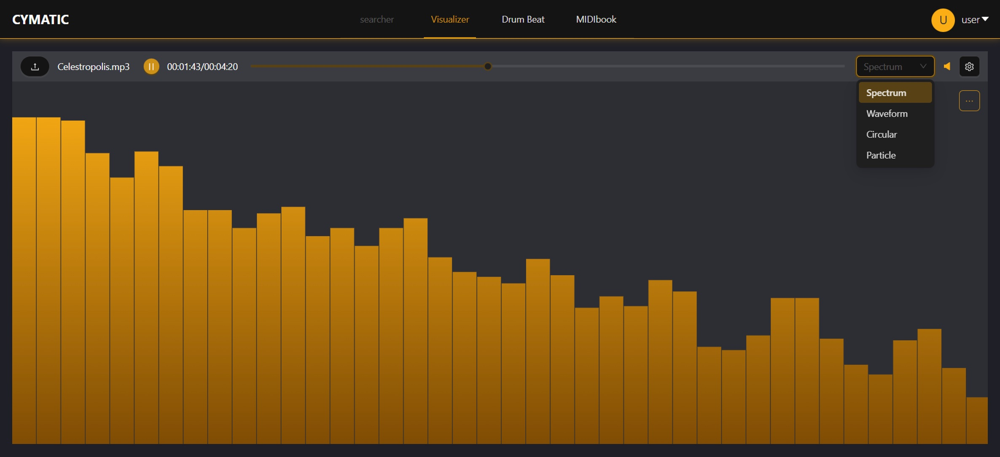
Adjustable settings that modify the graph's visual output.
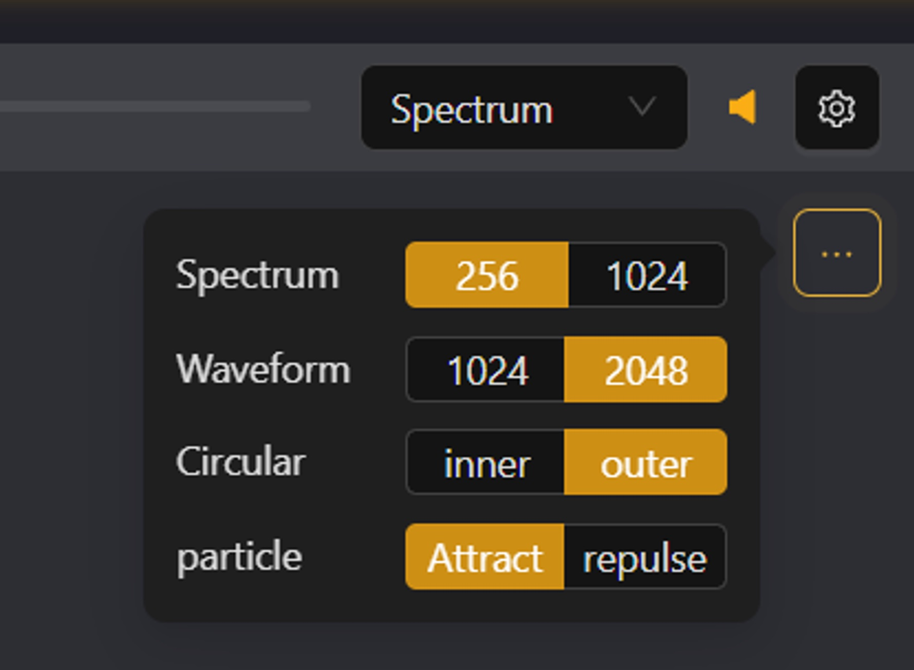
Interactive particle effects triggered by cursor movement.
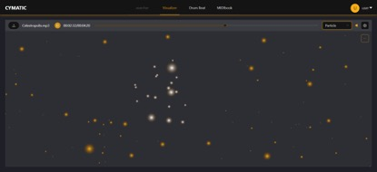
Available at:
HERE
Drum Beat Introduction
Available at:
HERE
Feature Descriptions
• A beat generator designed to test random / probabilistic algorithms for creating drum patterns. Users can set BPM, style, rhythm pattern, and probability parameters.
• Generated drum sequences can be exported directly as MIDI files. Currently, the pitch values in the exported MIDI are fixed; in future versions, the design will allow specifying the pitch of individual drum voices.
• Different rhythmic styles are produced based on configurable weights and generation strategies, although more detailed style customization is not yet available.
Technology & Architecture
This project is built on a Browser–Server (BS) architecture to facilitate easy access and cross-platform use.
It has been integrated into Aeon Cymatic platform
Vite + TypeScript + React + Ant Design
Project Overview
Drum beat generator with customizable parameters.
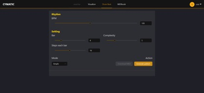
Generated beat patterns available for viewing and download.
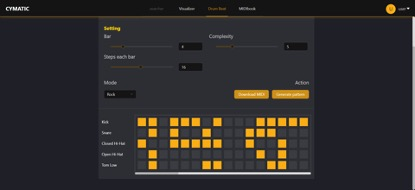
Available at:
HERE
MIDIbook Introduction
Available at:
HERE
Feature Descriptions
• A simplified, DAW-like MIDI editing tool (piano-roll) intended for quick sketching of musical ideas and capturing spontaneous creative inspiration.
• Provides a basic preview capability via audio synthesis. At present, it uses a simple synthesizer with three basic voices (rather than a sampled piano) to avoid server resource issue, though these sounds can be refined later.
• Persists note data in an SQLite database on the back end. Currently, notes are restricted to a fixed grid; future updates aim to support more flexible note start times and lengths.
Technology & Architecture
This project is built on a Browser–Server (BS) architecture to facilitate easy access and cross-platform use.
It has been integrated into Aeon Cymatic platform
Vite + TypeScript + React + Ant Design. The back end uses Node.js + SQLite to provide a lightweight database and API services.
Project Overview
MIDI notebook system for storing experimental melody data.
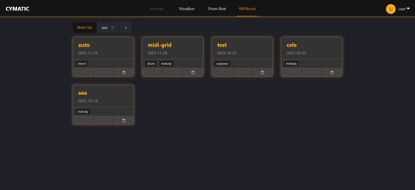
Custom settings interface for the notebook.
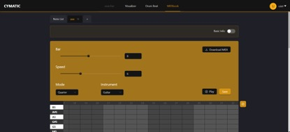
Piano roll with basic MIDI clip editing capabilities.
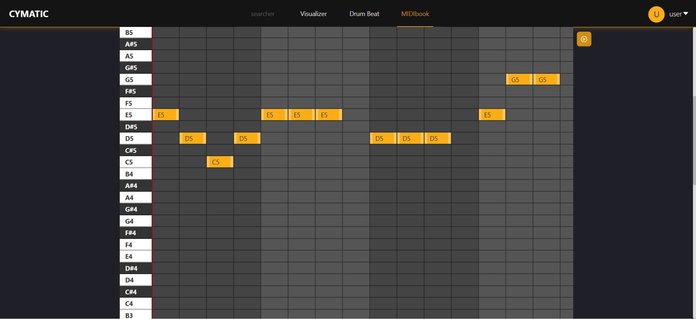
Available at:
HERE
Markov Melody Generator Introduction
Core Functionality & Purpose
The primary purpose of this plugin is to realize a basic Markov chain model as a melody generator: it learns from existing MIDI clips in the current Ableton project, incorporates them into the model, and then uses the model to predict and generate new melody suggestions.
By doing so, the plugin helps composers and producers in the creative process by providing context-aware melodic ideas. It can generate supporting melodies (secondary melodic material) based on the style of the existing clip. It can also serve as a source of core melodic inspiration, accelerating the composition process by allowing users to quickly test and validate musical ideas.
Technology & Architecture
This plugin is implemented as a Max for Live device for Ableton Live 11. The core logic is written in JavaScript, utilizing the Max js object to handle data, manage the Markov model, and process MIDI information.
Feature Descriptions
Training
• The model’s order can be configured. The plugin supports up to 6th-order Markov modeling to allow deeper context in learning.
• The same MIDI clip can be trained multiple times, possibly at different orders, to refine the model.
• Two training modes are supported. Overwrite mode clears the existing model and retrains from scratch while Merge mode retains the existing Markov data and adds new training data, thus accumulating data map.
Generation
• The plugin writes notes into a clip in real time based on the configured model, without deleting the original notes in that clip. The number of new notes is controlled via a parameter.
• A randomness ratio parameter determines how strictly the generation adheres to the learned Markov model: a higher ratio introduces more randomness and creative divergence.
• Since there are different ways to search through a multi-order Markov model, the plugin provides multiple algorithmic strategies: currently implemented are a waterfall strategy and a weighted-ratio strategy.
• Melody generation is based on the currently selected MIDI clip. Through the Ableton Live API, the plugin obtains the selected clip and appends new notes after the last existing note in that clip.
Project Overview
The Max4Live plugin loaded into a MIDI track (location shown in bottom-left corner).
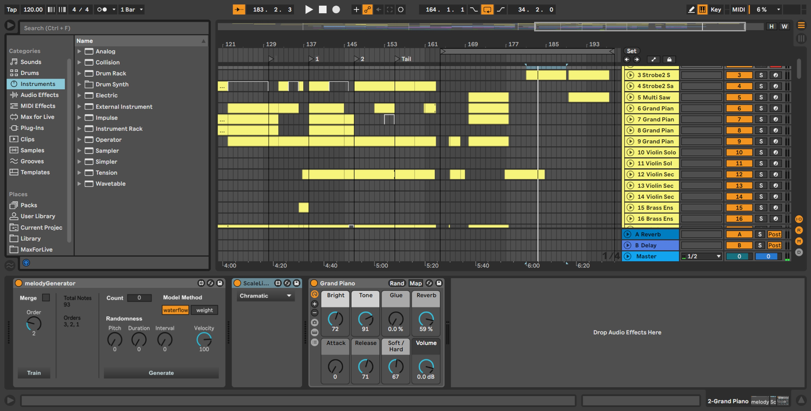
Max interface in presentation mode.
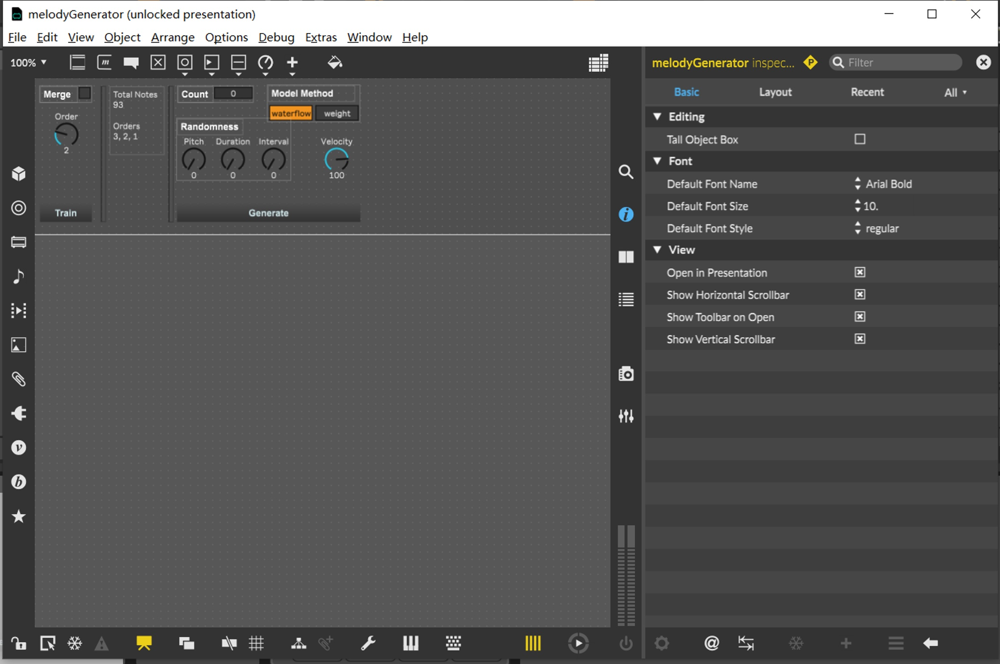
A custom JS node containing the model controller code.
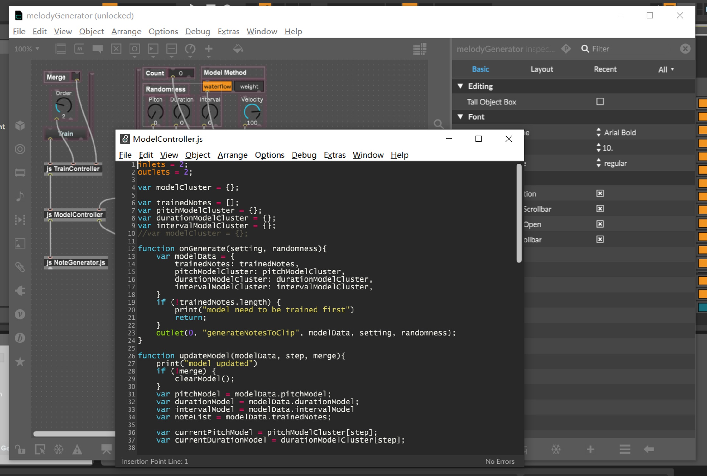
Trained on MIDI clips containing existing musical notes.
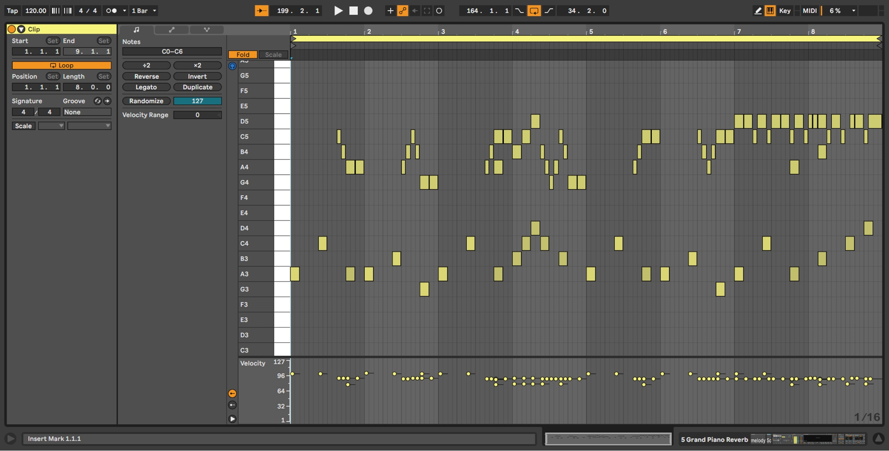
Generates a predicted note.
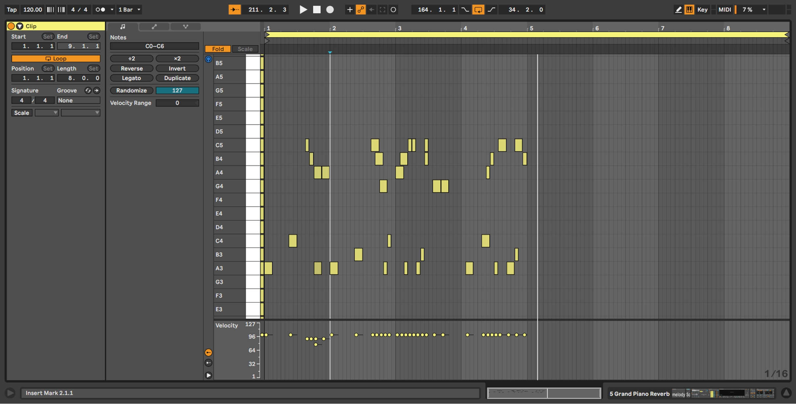
Senior Design – Astral Raiders
毕业设计 – Astral Raiders
Astral Raiders is an action tower defense game for the Microsoft Hololens. It is an Augmented Reality(AR) game which will bring unique game experience to the players.
AstralRaiders是一个基于微软Hololens平台的塔防游戏项目。这是一款AR(增强现实)游戏，它能够为玩家带来独特的游戏体验。
A small spacecraft crashes into the player's room where the ship's captain tells the player he's being followed by space pirates. The player must collect different items from around the room and create defensive items to defend the ship from incoming space enemies. When enemies are killed, they may drop loot such as new objects for the player to collect.
一个小型宇宙飞船撞上了玩家的房间。船长告诉玩家他正在被太空海盗追踪。玩家需要从房间中收集不同的零件并建造炮塔用以抵挡飞船免受海盗的攻击。当敌人被击毁时，他们亦会掉落可用的零件。
The game is developed with Unity.
该项目使用Unity开发.
Latest code package:
工程文件:
Not available at this time
2D Platformer – Spooky
2D横版过关游戏 - Spooky
2D platformer game, made with Unity. The game itself has three simple levels and a final boss run. Player can gain special ability by killing enemies and pick up their head. This game is made for Halloween
2D横版过关游戏，通过Unity开发。游戏共包括三个关卡和一个boss关卡。玩家可以通过击败敌人并捡起他们的掉落物获得特殊能力。
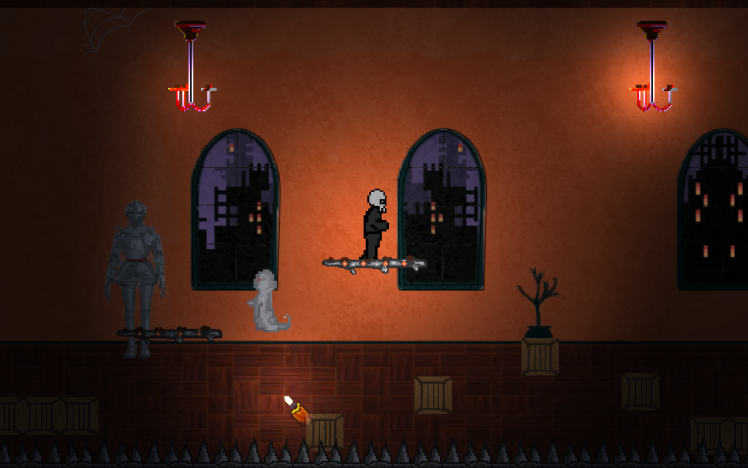
Collaborators: Jack Phoebus, Xingyu Huang, Odie Bonner, Saloni Shetty, Yihang Zhong, Kexin Han
协作者: Jack Phoebus, Xingyu Huang, Odie Bonner, Saloni Shetty, Yihang Zhong, Kexin Han
Available at:
项目链接:
HERE
About Me
Hi, I am a music creator and technology enthusiast with a passion for exploring the intersection of art and innovation. My journey into music began during my university years when I first encountered Ableton Live. What started as an exploration of MIDI and sound design quickly evolved into a deeper understanding of the algorithms and systems that drive music creation. This realization sparked my dedication to combining technical expertise with artistic expression.
With a background in Computer Science, I have developed a strong foundation in algorithm design, system architecture, and problem-solving. These skills have empowered me to build creative tools, such as Aeon Cymatic, a web-based platform designed to inspire and assist musicians. The platform integrates experimental features like a real-time audio visualizer and a MIDI notebook, allowing users to capture and explore musical ideas across devices. My experience in front-end development has also refined my ability to design intuitive, user-centered tools that enhance the creative process.
My musical compositions primarily feature instrumental and epic music, as I find instrumental pieces to be a powerful medium for emotional expression. I believe music is not just an art form, but a tool for sparking innovation and new ideas. By merging technology and music, I aim to create more intuitive and flexible systems that help artists realize their creative visions. I am particularly interested in the role of AI as a collaborator in the creative process, exploring its potential to analyze emotional intent and assist in generating music that resonates with listeners on a deeper level.
I am excited to continue this journey of blending technology and music, pushing the boundaries of creativity, and developing new tools that empower artists to unlock their full potential.
Close